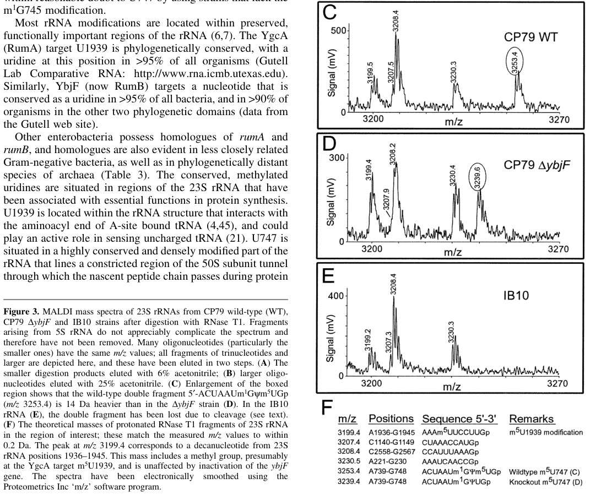

RlmC (formerly RumB/YbjF) is a 23S rRNA (uracil(747)-C(5))-methyltransferase (EC 2.1.1.189) in E. coli K12 that catalyzes the formation of 5-methyluridine at position 747 (m5U747) in 23S rRNA using S-adenosyl-L-methionine as methyl donor. It belongs to the COG2265 cluster of RNA m5U methyltransferases, which in E. coli includes three paralogs with distinct specificities: TrmA (tRNA U54), RlmC (23S rRNA U747), and RlmD/RumA (23S rRNA U1939). Function was established in vivo by Madsen et al. (2003, PMID:12907714) using a ybjF knockout strain, which specifically lacked only the m5U747 modification. RlmC contains an N-terminal [4Fe-4S] cluster (predicted by HAMAP based on the conserved CX5CGGC motif established in the paralog RumA/RlmD) and a C-terminal SAM-dependent methyltransferase fold with a catalytic cysteine (Cys334) that forms a covalent Michael adduct with the target uracil during catalysis. In some Gram-positive bacteria such as B. subtilis, a single enzyme (RlmCD) performs both the U747 and U1939 modifications, suggesting evolutionary specialization of the COG2265 paralogs in E. coli.
| GO Term | Evidence | Action | Reason |
|---|---|---|---|
|
GO:0070041
rRNA (uridine-C5-)-methyltransferase activity
|
IBA
GO_REF:0000033 |
ACCEPT |
Summary: IBA annotation for rRNA (uridine-C5-)-methyltransferase activity based on phylogenetic inference (PANTHER). This is the most specific molecular function term for RlmC and is strongly supported by the in vivo knockout evidence from Madsen et al. 2003 (PMID:12907714), which showed loss of m5U747 modification specifically in the ybjF/rlmC deletion strain.
Reason: This is the correct and most specific molecular function annotation for RlmC. The IBA inference from PANTHER is well supported by experimental IMP evidence (PMID:12907714) demonstrating that RlmC specifically methylates U747 at C5 in 23S rRNA.
Supporting Evidence:
PMID:12907714
Comparison of the methylation patterns in 23S rRNAs from YbjF(+) and YbjF(-) strains showed that the latter differed only in the lack of the m(5)U747 modification
file:ECOLI/rlmC/rlmC-deep-research-bioreason-sft.md
BioReason domain architecture analysis confirms RlmC family assignment (IPR011825) and the TrmA-like catalytic mechanism, consistent with rRNA (uridine-C5-)-methyltransferase activity
file:ECOLI/rlmC/rlmC-deep-research-falcon.md
These data directly support that **RlmC is required in vivo for m5U747 formation**.
|
|
GO:0070475
rRNA base methylation
|
IBA
GO_REF:0000033 |
ACCEPT |
Summary: IBA annotation for rRNA base methylation based on phylogenetic inference (PANTHER). Correct biological process for RlmC. The m5U747 modification is a base methylation on 23S rRNA.
Reason: Accurately describes the biological process: RlmC catalyzes methylation of a base (uracil C5) in rRNA. Supported by in vivo evidence from PMID:12907714.
Supporting Evidence:
PMID:12907714
Comparison of the methylation patterns in 23S rRNAs from YbjF(+) and YbjF(-) strains showed that the latter differed only in the lack of the m(5)U747 modification
file:ECOLI/rlmC/rlmC-deep-research-falcon.md
This assignment explicitly distinguishes RlmC from the related paralogs **TrmA** (tRNA U54 methyltransferase) and **RlmD/RumA** (23S rRNA U1939 methyltransferase).
|
|
GO:0005506
iron ion binding
|
IEA
GO_REF:0000104 |
MODIFY |
Summary: IEA annotation for iron ion binding based on UniRule (UR000100395). RlmC contains a predicted [4Fe-4S] cluster coordinated by Cys3, Cys11, Cys14, and Cys87 (HAMAP-Rule:MF_01012). The [4Fe-4S] cluster has been experimentally demonstrated in the paralog RumA/RlmD (PMID:15181002, PMID:15016356) and the cysteine motif CX5CGGC is conserved in RlmC. While iron ion binding is technically correct, a more precise term would be 4 iron, 4 sulfur cluster binding (GO:0051539), which is already annotated in the UniProt DR lines.
Reason: Iron ion binding is too general. The iron is bound as part of a [4Fe-4S] cluster, not as free iron ions. GO:0051539 (4 iron, 4 sulfur cluster binding) is a more precise and informative annotation. The [4Fe-4S] cluster is well-established in this enzyme family (PMID:15181002).
Proposed replacements:
4 iron, 4 sulfur cluster binding
Supporting Evidence:
PMID:15181002
Sequence data base searches revealed that RumA homologs are widespread in various kingdoms of life and contain a conserved and unique iron-sulfur cluster binding motif, CX(5)CGGC
|
|
GO:0006396
RNA processing
|
IEA
GO_REF:0000120 |
MODIFY |
Summary: IEA annotation for RNA processing based on combined automated methods (InterPro:IPR010280). RNA processing is overly broad for what RlmC does. RlmC performs a specific chemical modification (methylation) of rRNA, not processing in the sense of cleavage, splicing, or end-maturation. The more appropriate term is rRNA methylation (GO:0031167) or rRNA base methylation (GO:0070475), both of which are already annotated.
Reason: RNA processing is too general and somewhat misleading for a methyltransferase. Methylation is a modification, not processing. The correct biological process terms (rRNA methylation, rRNA base methylation) are already present.
Proposed replacements:
rRNA methylation
Supporting Evidence:
PMID:12907714
here we determine the functions of these candidate methyltransferases using MALDI mass spectrometry
file:ECOLI/rlmC/rlmC-deep-research-falcon.md
loss of m5U747 produces **subtle/conditional defects** in rRNA maturation/homeostasis rather than catastrophic ribosome assembly failure.
|
|
GO:0008173
RNA methyltransferase activity
|
IEA
GO_REF:0000120 |
KEEP AS NON CORE |
Summary: IEA annotation for RNA methyltransferase activity. This is correct but less specific than GO:0070041 (rRNA (uridine-C5-)-methyltransferase activity) and GO:0016436 (rRNA (uridine) methyltransferase activity), both of which are already annotated. This is a valid parent term but redundant when the more specific child terms are present.
Reason: Correct but redundant with the more specific terms GO:0070041 and GO:0016436 that are already annotated. Keeping as non-core since it adds no information beyond what the more specific terms provide.
|
|
GO:0008757
S-adenosylmethionine-dependent methyltransferase activity
|
IEA
GO_REF:0000117 |
KEEP AS NON CORE |
Summary: IEA annotation for SAM-dependent methyltransferase activity based on ARBA machine learning. Correct: RlmC uses S-adenosyl-L-methionine as methyl donor. The catalytic reaction is well-defined (Rhea:RHEA:42628). However, this is a general parent term and less specific than GO:0070041.
Reason: Correct cofactor usage but a general parent of the more specific rRNA methyltransferase terms already present. The SAM-dependent mechanism is confirmed by the UniProt catalytic activity annotation and the family membership in COG2265 SAM-dependent RNA m5U methyltransferases.
Supporting Evidence:
PMID:12907714
Two open reading frames, YbjF and YgcA, are approximately 30% identical to TrmA
file:ECOLI/rlmC/rlmC-deep-research-falcon.md
RlmC is a **23S rRNA (uracil(747))-C(5)-methyltransferase** (EC **2.1.1.189**) that catalyzes:
|
|
GO:0009451
RNA modification
|
IEA
GO_REF:0000117 |
KEEP AS NON CORE |
Summary: IEA annotation for RNA modification based on ARBA. Correct but very general. More specific child terms (rRNA base methylation GO:0070475, rRNA methylation GO:0031167) are already annotated.
Reason: Correct but very general parent of more specific biological process terms already annotated. Redundant with GO:0070475 and GO:0031167.
|
|
GO:0016070
RNA metabolic process
|
IEA
GO_REF:0000002 |
KEEP AS NON CORE |
Summary: IEA annotation for RNA metabolic process based on InterPro (IPR011825). Extremely broad term. While technically true, this is uninformative given the much more specific annotations already present.
Reason: Extremely broad parent term. Redundant with more specific biological process annotations (rRNA base methylation, rRNA methylation). Provides no additional functional insight.
|
|
GO:0016436
rRNA (uridine) methyltransferase activity
|
IEA
GO_REF:0000002 |
MODIFY |
Summary: IEA annotation for rRNA (uridine) methyltransferase activity based on InterPro (IPR011825). This is a correct molecular function annotation at an intermediate specificity level. GO:0070041 (rRNA (uridine-C5-)-methyltransferase activity) is more specific and also annotated. Since the evidence from PMID:12907714 specifically demonstrates C5 methylation, the more specific term is preferred.
Reason: The evidence supports the more specific term GO:0070041 (rRNA (uridine-C5-)- methyltransferase activity), which specifies the C5 position. Consistent with the action for the IMP-evidenced annotation of the same term.
Proposed replacements:
rRNA (uridine-C5-)-methyltransferase activity
|
|
GO:0031167
rRNA methylation
|
IEA
GO_REF:0000104 |
KEEP AS NON CORE |
Summary: IEA annotation for rRNA methylation based on UniRule (UR000100395). This is an appropriate biological process term for RlmC. It is a parent of GO:0070475 (rRNA base methylation), which is already annotated with experimental (IMP) evidence. Keeping as non-core since the more specific child term is present.
Reason: Correct but parent of the more specific GO:0070475 (rRNA base methylation) which is annotated with IMP evidence.
|
|
GO:0070041
rRNA (uridine-C5-)-methyltransferase activity
|
IEA
GO_REF:0000104 |
ACCEPT |
Summary: IEA annotation for rRNA (uridine-C5-)-methyltransferase activity based on UniRule (UR000100395). Duplicate of the IBA annotation with the same GO term from GO_REF:0000033. Both are correct; this IEA provides independent computational support.
Reason: Correct and most specific molecular function term. Independent computational support for the IBA annotation from PANTHER.
Supporting Evidence:
PMID:12907714
Comparison of the methylation patterns in 23S rRNAs from YbjF(+) and YbjF(-) strains showed that the latter differed only in the lack of the m(5)U747 modification
|
|
GO:0070475
rRNA base methylation
|
IMP
PMID:12907714 Identifying the methyltransferases for m(5)U747 and m(5)U193... |
ACCEPT |
Summary: IMP annotation for rRNA base methylation from Madsen et al. 2003. This is the key experimental evidence for RlmC function, based on comparison of methylation patterns between wild-type and ybjF knockout strains using MALDI mass spectrometry. The knockout specifically lost m5U747 methylation.
Reason: Core experimental evidence (IMP) demonstrating that RlmC is required for rRNA base methylation in vivo. The MALDI-MS analysis directly showed loss of m5U747 in the knockout strain. This is the most informative biological process annotation with direct experimental support.
Supporting Evidence:
PMID:12907714
Comparison of the methylation patterns in 23S rRNAs from YbjF(+) and YbjF(-) strains showed that the latter differed only in the lack of the m(5)U747 modification
|
|
GO:0016436
rRNA (uridine) methyltransferase activity
|
IMP
PMID:12907714 Identifying the methyltransferases for m(5)U747 and m(5)U193... |
MODIFY |
Summary: IMP annotation for rRNA (uridine) methyltransferase activity from Madsen et al. 2003. Based on the same knockout experiment that demonstrated loss of m5U747 in the ybjF- strain. While IMP (inferred from mutant phenotype) is technically the correct evidence code for this knockout study, a more specific MF term GO:0070041 would be preferred.
Reason: The evidence from PMID:12907714 supports the more specific term GO:0070041 (rRNA (uridine-C5-)-methyltransferase activity) since the study specifically demonstrated C5 methylation of uridine. Upgrading to the more specific term.
Proposed replacements:
rRNA (uridine-C5-)-methyltransferase activity
Supporting Evidence:
PMID:12907714
There are three sites of m(5)U modification in Escherichia coli stable RNAs
|
Q: What is the functional significance of the m5U747 modification for ribosome assembly or translational fidelity? The original knockout study (PMID:12907714) did not report growth phenotypes.
Q: Has the [4Fe-4S] cluster in RlmC been experimentally verified, or is this inference based solely on sequence conservation with RumA/RlmD?
Q: Why could recombinant RlmC not be obtained in active form in vitro (PMID:12907714)? Is this related to [4Fe-4S] cluster assembly or protein folding requirements?
Experiment: Phenotypic characterization of an rlmC deletion strain under stress conditions (e.g., sublethal antibiotic concentrations, temperature stress, competitive growth). The original study (PMID:12907714) focused on biochemical identification of the modification rather than phenotypic consequences.
Hypothesis: Loss of m5U747 may confer subtle growth disadvantages under stress conditions or when combined with loss of other rRNA modifications.
Experiment: Spectroscopic characterization (UV-vis, EPR) of purified RlmC to directly demonstrate the presence of a [4Fe-4S] cluster, analogous to the studies performed on RumA/RlmD (PMID:15181002).
Hypothesis: RlmC contains a [4Fe-4S] cluster coordinated by Cys3, Cys11, Cys14, and Cys87, analogous to the cluster in RumA/RlmD.
I begin with the InterPro architecture. The sequence is saturated with signatures of the TrmA/RlmC clade of RNA C5-uracil methyltransferases. IPR011825 (23S rRNA (uracil(747)-C5)-methyltransferase RlmC family, residues 1–375) and its near-complete overlap with IPR010280 ((Uracil-5)-methyltransferase family, residues 2–373/12–375/208–374) define the enzyme class and substrate class: a uracil-directed C5-specific RNA methyltransferase. Two superfamily-level envelopes, IPR029063 (S-adenosyl-L-methionine-dependent methyltransferase superfamily, residues 3–374/14–368), indicate a Rossmann-like AdoMet-binding fold that donates a methyl group. The catalytic core is pinpointed by IPR030390 (RNA methyltransferase TrmA, active site, residues 307–338) and IPR030391 (RNA methyltransferase TrmA, conserved site, residues 357–367), which together mark the hallmark TrmA/RlmC catalytic constellation: a nucleophilic cysteine that forms a covalent adduct at the uracil C6 position, enabling electrophilic substitution at C5, and a basic residue that activates the target N1/C5 region. The ordered layout—AdoMet-binding superfamily spanning the full length, with embedded TrmA/RlmC active-site motifs in the C-terminal half—causes a methyl transfer reaction to the C5 position of a uracil base within structured rRNA.
This domain architecture dictates the molecular function as rRNA (uracil-C5)-specific methyltransferase activity (GO:0070043). The RlmC family assignment (IPR011825) narrows the substrate to 23S rRNA and the target nucleotide to U747, so the enzyme catalyzes formation of m5U747. The chemistry proceeds by AdoMet binding via the Rossmann-like fold (IPR029063), nucleophilic attack by the TrmA-like cysteine (IPR030390) to form a covalent Michael adduct at U747 C6, methyl transfer to C5, and beta-elimination to release m5U747, regenerating the active cysteine.
Installing m5U747 is a specific instance of rRNA base methylation (GO:0070475). This modification stabilizes local rRNA structure in the large subunit and tunes functional centers during ribosome assembly and translation, thereby contributing to robust ribosome biogenesis and performance. Because the enzyme acts on 23S rRNA within assembling 50S particles, its activity integrates into the maturation pathway rather than late-stage translation.
The absence of transmembrane segments and the soluble Rossmann-like fold, together with the need to access pre-50S assembly intermediates, place the enzyme in the cytosol (GO:0005829). In bacteria, 50S subunits assemble in the cytosol; thus the enzyme operates where pre-ribosomal particles are available.
Mechanistically, the enzyme likely recognizes a conserved structural context around U747 in 23S rRNA, using the TrmA-like active-site pocket to dock the helix bearing U747 and flip the base into the catalytic pocket. It should transiently associate with 50S assembly intermediates and accessory factors that present or stabilize the relevant helix. Plausible partners include 50S ribosomal proteins positioned near the 70S-binding region (e.g., L3 and L4) that help present the helix, and 23S rRNA chaperones or assembly factors (e.g., the ObgE GTPase and the RbgA GTPase) that coordinate maturation states. Because catalysis consumes S-adenosyl-L-methionine, coupling to local SAM supply is also likely, but the primary functional network centers on pre-50S particles and their maturation GTPases.
## Functional Summary
A cytosolic RNA methyltransferase in E. coli that installs a 5-methyl group on uracil 747 within 23S rRNA during large-subunit assembly. It binds S-adenosyl-L-methionine, flips U747 into a TrmA-like active site, and uses a catalytic cysteine to form a transient covalent adduct that enables methyl transfer at C5, thereby stabilizing local rRNA structure and supporting efficient ribosome biogenesis.
## UniProt Summary
Specifically methylates the uracil ring at position 747 of 23S rRNA.
## InterPro Domains
- IPR011825: 23S rRNA (uracil(747)-C(5))-methyltransferase RlmC (family) [1-375]
- IPR010280: (Uracil-5)-methyltransferase family (family) [2-373]
- IPR011825: 23S rRNA (uracil(747)-C(5))-methyltransferase RlmC (family) [2-374]
- IPR029063: S-adenosyl-L-methionine-dependent methyltransferase superfamily (homologous_superfamily) [3-374]
- IPR010280: (Uracil-5)-methyltransferase family (family) [12-375]
- IPR029063: S-adenosyl-L-methionine-dependent methyltransferase superfamily (homologous_superfamily) [14-368]
- IPR010280: (Uracil-5)-methyltransferase family (family) [208-374]
- IPR030390: RNA methyltransferase TrmA, active site (active_site) [307-338]
- IPR030391: RNA methyltransferase TrmA, conserved site (conserved_site) [357-367]
## GO Term Predictions
### Molecular Function
### Biological Process
### Cellular Component
The research report should be a detailed narrative explaining the function, biological processes, and localization of the gene product. Citations should be given for all claims.
You should prioritize authoritative reviews and primary scientific literature when conducting research. You can supplement
this with annotations you find in gene/protein databases, but these can be outdated or inaccurate.
We are specifically interested in the primary function of the gene - for enzymes, what reaction is catalyzed, and what is the substrate specificity? For transporters, what is the substrate? For structural proteins or adapters, what is the broader structural role? For signaling molecules, what is the role in the pathway.
We are interested in where in or outside the cell the gene product carries out its function.
We are also interested in the signaling or biochemical pathways in which the gene functions. We are less interested in broad pleiotropic effects, except where these elucidate the precise role.
Include evidence where possible. We are interested in both experimental evidence as well as inference from structure, evolution, or bioinformatic analysis. Precise studies should be prioritized over high-throughput, where available.
The target gene rlmC in Escherichia coli K-12 (UniProt P75817) corresponds to the locus historically annotated as ybjF and also called rumB, and encodes a SAM/AdoMet-dependent RNA methyltransferase dedicated to forming 5-methyluridine (m5U; ribothymidine) at U747 in 23S rRNA. This assignment explicitly distinguishes RlmC from the related paralogs TrmA (tRNA U54 methyltransferase) and RlmD/RumA (23S rRNA U1939 methyltransferase). (madsen2003identifyingthemethyltransferases pages 1-2, desmolaize2011asinglemethyltransferase pages 1-2)
m5U denotes uridine methylated at carbon-5 of the uracil ring. In bacteria, m5U is installed by SAM-dependent methyltransferases in the COG2265/TrmA-like family; methyl transfer yields a single-methyl increase in mass (≈ +14 Da) at the modified nucleotide in mass-spectrometry assays. (auxilien2011specificityshiftsin pages 1-2, madsen2003identifyingthemethyltransferases pages 5-6)
RlmC is a 23S rRNA (uracil(747))-C(5)-methyltransferase (EC 2.1.1.189) that catalyzes:
This is supported both by primary mapping experiments and by family-level mechanistic inference for m5U methyltransferases. (madsen2003identifyingthemethyltransferases pages 5-6, auxilien2011specificityshiftsin pages 1-2)
The foundational functional assignment in E. coli comes from genetic disruption of ybjF/rlmC coupled to MALDI mass spectrometry mapping of RNase T1 fragments from 23S rRNA. In the ybjF knockout:
These data directly support that RlmC is required in vivo for m5U747 formation. (madsen2003identifyingthemethyltransferases pages 5-6, madsen2003identifyingthemethyltransferases media f8177917)
An authoritative EcoSal Plus review summarizes that attempts to demonstrate in vitro methyltransferase activity for recombinant/purified RlmC were unsuccessful when using:
This negative biochemical evidence has been interpreted as suggesting RlmC may require a specific ribonucleoprotein (RNP) context, such as a ribosome assembly intermediate or near-mature 50S particle, rather than free RNA. (ofengand2004modifiednucleosidesof pages 15-16)
Comparative analysis places m5U747 in hairpin 35 of 23S rRNA, where the base is described as protruding into the large-subunit exit tunnel and thus may influence the tunnel environment and nascent chain interactions. (auxilien2011specificityshiftsin pages 1-2)
RlmC functions in the broader pathway of ribosomal RNA chemical modification, which is tightly coupled to ribosome biogenesis and maturation. In bacteria, these modification enzymes are generally cytoplasmic and act on pre-rRNA / assembling ribosomal particles (direct fractionation for RlmC was not retrieved here, but the substrate—23S rRNA—implies a cytoplasmic ribosome-biogenesis context). The likely requirement for an RNP substrate further supports action during assembly/maturation rather than on isolated RNA. (ofengand2004modifiednucleosidesof pages 15-16, auxilien2011specificityshiftsin pages 1-2)
A systematic study of E. coli rRNA methyltransferase knockouts (Keio collection) found that:
Together, these results support a model where loss of m5U747 produces subtle/conditional defects in rRNA maturation/homeostasis rather than catastrophic ribosome assembly failure. (pletnev2020comprehensivefunctionalanalysis pages 4-7, pletnev2020comprehensivefunctionalanalysis pages 1-2)
The same study used reporter systems to quantify capacity for heterologous/exogenous protein expression, including:
Across many rRNA methyltransferase knockouts, reporter yields were commonly reduced; ΔrlmC was included among strains with reduced tolerance for protein overexpression burden, and proteome changes for ΔrlmC were sufficiently strong to appear in their proteomics tables. (pletnev2020comprehensivefunctionalanalysis pages 7-9)
Within the retrieved literature set, direct 2023–2024 primary studies focused specifically on E. coli RlmC were limited. Current “recent” progress relevant to RlmC is largely indirect and reflects broader trends:
High-resolution ribosome structure determination increasingly confirms rRNA modifications and uses them to interpret antibiotic binding and ribosome function. For example, 2024 cryo-EM work on bacterial ribosomes explicitly notes that high-resolution structures enable confirmation of many rRNA modifications and references RlmC as the E. coli enzyme responsible for a corresponding modification position in comparative contexts. (madsen2003identifyingthemethyltransferases media f8177917)
Bacterial modomics/epitranscriptomics continues to emphasize improved mapping workflows (e.g., mass spectrometry and long-read approaches in other organisms), and comparative enzymology uses the RlmC/RlmD/RlmCD system as a model for how methyltransferase target specificity evolves. (desmolaize2011asinglemethyltransferase pages 1-2, auxilien2011specificityshiftsin pages 1-2)
Authoritative synthesis emphasizes two key “expert” interpretations relevant to functional annotation:
RlmC/m5U747 is a canonical benchmark modification used in rRNA modification mapping. The original E. coli assignment itself is an example of a widely used real-world workflow:
This approach remains a template for mapping and validating rRNA modifications in additional bacteria. (madsen2003identifyingthemethyltransferases pages 5-6, madsen2003identifyingthemethyltransferases media f8177917)
RlmC is frequently invoked in comparative discussions where related enzymes exhibit altered specificity (e.g., single-target RlmC vs dual-target RlmCD in Gram-positive bacteria), informing hypotheses about ribosome function and potential antimicrobial strategies aimed at ribosome maturation/modification processes. (desmolaize2011asinglemethyltransferase pages 1-2, auxilien2011specificityshiftsin pages 1-2)
| Item | Key finding | Evidence type/method | Key quantitative/statistical detail (if any) | Primary source with DOI/URL and year | Citation ID |
|---|---|---|---|---|---|
| Identity | rlmC in Escherichia coli K-12 corresponds to YbjF/RumB, the dedicated 23S rRNA (uracil-747)-C5 methyltransferase RlmC, distinct from RlmD (U1939) and TrmA (tRNA U54). | Gene-function assignment from knockout-based modification mapping; comparative family/evolution analyses | E. coli has three related COG2265 m5U methyltransferases with distinct targets | Madsen et al., Nucleic Acids Research (2003), DOI: 10.1093/nar/gkg657, https://doi.org/10.1093/nar/gkg657; Desmolaize et al., Nucleic Acids Research (2011), DOI: 10.1093/nar/gkr626, https://doi.org/10.1093/nar/gkr626 | (madsen2003identifyingthemethyltransferases pages 1-2, desmolaize2011asinglemethyltransferase pages 1-2) |
| Reaction | RlmC catalyzes SAM/AdoMet-dependent C5 methylation of uridine 747 in 23S rRNA, generating m5U747 (ribothymidine). | In vivo loss-of-modification mapping by MALDI-MS in knockout strains; family/mechanistic inference for SAM-dependent m5U MTases | Loss of a single methyl group gives a ~14 Da mass decrease in the relevant 23S rRNA fragment | Madsen et al. (2003), DOI: 10.1093/nar/gkg657, https://doi.org/10.1093/nar/gkg657; Auxilien et al., RNA (2011), DOI: 10.1261/rna.2323411, https://doi.org/10.1261/rna.2323411 | (madsen2003identifyingthemethyltransferases pages 5-6, auxilien2011specificityshiftsin pages 1-2) |
| Substrate | The mapped target is the 23S rRNA segment containing U747, specifically localized to the U746-U747-G748 region; evidence supports methylation at U747, not neighboring residues. | RNase T1 digestion plus MALDI-MS of defined oligonucleotides from WT vs knockout rRNA | Decamer mass shift 3253.4 → 3239.6; in an rrmA-deficient background a heptamer at m/z 2268.3 enabled localization to the trinucleotide region | Madsen et al. (2003), DOI: 10.1093/nar/gkg657, https://doi.org/10.1093/nar/gkg657 | (madsen2003identifyingthemethyltransferases pages 5-6) |
| Location | The enzyme functions in the cytoplasm on 23S rRNA/large ribosomal subunit biogenesis substrates; the modified nucleotide lies in hairpin 35 of 23S rRNA and projects toward the nascent peptide exit tunnel. | Structural/functional interpretation from ribosome mapping and comparative review | No direct subcellular fractionation reported for RlmC in the cited evidence | Auxilien et al. (2011), DOI: 10.1261/rna.2323411, https://doi.org/10.1261/rna.2323411; Ofengand & Del Campo, EcoSal Plus (2004), DOI: 10.1128/ecosalplus.4.6.1, https://doi.org/10.1128/ecosalplus.4.6.1 | (auxilien2011specificityshiftsin pages 1-2, ofengand2004modifiednucleosidesof pages 15-16) |
| Biological role | RlmC is part of the rRNA modification pathway supporting maturation and functional tuning of the 50S subunit; available evidence suggests the true substrate may be an assembly intermediate/RNP or intact 50S particle, rather than naked RNA. | Negative in vitro reconstitution results with recombinant protein and transcript substrates; review-based functional interpretation | Recombinant/purified RlmC showed no detectable activity on isolated 23S rRNA from the mutant or on a 694-767 nt transcript in reported assays | Ofengand & Del Campo (2004), DOI: 10.1128/ecosalplus.4.6.1, https://doi.org/10.1128/ecosalplus.4.6.1 | (ofengand2004modifiednucleosidesof pages 15-16) |
| Phenotypes | rlmC deletion causes a mild phenotype overall but is associated with 17S rRNA precursor accumulation, especially at 20°C, indicating a subtle role in small-subunit rRNA processing/overall ribosome homeostasis; no major ribosomal assembly intermediate accumulation like rlmE. | Keio knockout phenotyping; RT-qPCR for 17S precursor; sucrose gradient centrifugation under dissociating/associating Mg2+ conditions; reporter-expression assays | 17S accumulation detected at 20°C not 37°C; gradients examined at 1 mM and 10 mM Mg2+; some rRNA MT knockouts showed up to 10-fold RFP reduction in reporter assays, with rlmC included among strains with reduced expression burden tolerance | Pletnev et al., Frontiers in Genetics (2020), DOI: 10.3389/fgene.2020.00097, https://doi.org/10.3389/fgene.2020.00097 | (pletnev2020comprehensivefunctionalanalysis pages 4-7, pletnev2020comprehensivefunctionalanalysis pages 7-9, pletnev2020comprehensivefunctionalanalysis pages 1-2) |
| Recent developments | Recent work emphasizes high-resolution ribosome structure/modification mapping and broader bacterial epitranscriptomics/modomics as the main route for contextualizing m5U747; direct 2023-2024 E. coli-specific RlmC studies are limited, so current understanding still relies heavily on foundational mapping and comparative analyses. | Recent structural/modification-mapping literature and synthesis with older primary assignment papers | 2024 studies highlight species-specific confirmation of many rRNA modifications but do not substantially revise the core E. coli RlmC assignment | González-López et al., Scientific Reports (2024), DOI: 10.1038/s41598-024-64868-x, https://doi.org/10.1038/s41598-024-64868-x; Pletnev et al. (2020), DOI: 10.3389/fgene.2020.00097, https://doi.org/10.3389/fgene.2020.00097 | (pletnev2020comprehensivefunctionalanalysis pages 7-9) |
| Applications | RlmC serves as a reference enzyme/site for rRNA modification mapping, comparative evolution of m5U methyltransferases, and potential ribosome-targeted antimicrobial research, especially in studies comparing single-specificity enzymes (RlmC/RlmD) with dual-specificity homologs (RlmCD). | MALDI-MS mapping workflows; comparative enzymology and structure-guided analyses | The classic assignment relied on diagnostic single-methyl (~14 Da) mass shifts in specific oligoribonucleotides | Madsen et al. (2003), DOI: 10.1093/nar/gkg657, https://doi.org/10.1093/nar/gkg657; Jiang et al., PLOS Pathogens (2018), DOI: 10.1371/journal.ppat.1007379, https://doi.org/10.1371/journal.ppat.1007379 | (madsen2003identifyingthemethyltransferases pages 5-6, desmolaize2011asinglemethyltransferase pages 5-6) |
Table: This table summarizes the main evidence supporting the functional annotation of E. coli K-12 RlmC (UniProt P75817), including identity, catalytic activity, substrate assignment, phenotypes, and current research uses. It is useful as a compact evidence map linking each claim to the underlying method and source.
References
(madsen2003identifyingthemethyltransferases pages 1-2): C. T. Madsen, J. Mengel-Jørgensen, F. Kirpekar, and S. Douthwaite. Identifying the methyltransferases for m5u747 and m5u1939 in 23s rrna using maldi mass spectrometry. Nucleic Acids Research, 31:4738-4746, Aug 2003. URL: https://doi.org/10.1093/nar/gkg657, doi:10.1093/nar/gkg657. This article has 101 citations and is from a highest quality peer-reviewed journal.
(desmolaize2011asinglemethyltransferase pages 1-2): Benoit Desmolaize, Céline Fabret, Damien Brégeon, Simon Rose, Henri Grosjean, and Stephen Douthwaite. A single methyltransferase yefa (rlmcd) catalyses both m5u747 and m5u1939 modifications in bacillus subtilis 23s rrna. Nucleic Acids Research, 39:9368-9375, Aug 2011. URL: https://doi.org/10.1093/nar/gkr626, doi:10.1093/nar/gkr626. This article has 44 citations and is from a highest quality peer-reviewed journal.
(auxilien2011specificityshiftsin pages 1-2): Sylvie Auxilien, Anette Rasmussen, Simon Rose, Céline Brochier-Armanet, Clotilde Husson, Dominique Fourmy, Henri Grosjean, and Stephen Douthwaite. Specificity shifts in the rrna and trna nucleotide targets of archaeal and bacterial m5u methyltransferases. RNA, 17 1:45-53, Nov 2011. URL: https://doi.org/10.1261/rna.2323411, doi:10.1261/rna.2323411. This article has 43 citations and is from a domain leading peer-reviewed journal.
(madsen2003identifyingthemethyltransferases pages 5-6): C. T. Madsen, J. Mengel-Jørgensen, F. Kirpekar, and S. Douthwaite. Identifying the methyltransferases for m5u747 and m5u1939 in 23s rrna using maldi mass spectrometry. Nucleic Acids Research, 31:4738-4746, Aug 2003. URL: https://doi.org/10.1093/nar/gkg657, doi:10.1093/nar/gkg657. This article has 101 citations and is from a highest quality peer-reviewed journal.
(madsen2003identifyingthemethyltransferases media f8177917): C. T. Madsen, J. Mengel-Jørgensen, F. Kirpekar, and S. Douthwaite. Identifying the methyltransferases for m5u747 and m5u1939 in 23s rrna using maldi mass spectrometry. Nucleic Acids Research, 31:4738-4746, Aug 2003. URL: https://doi.org/10.1093/nar/gkg657, doi:10.1093/nar/gkg657. This article has 101 citations and is from a highest quality peer-reviewed journal.
(ofengand2004modifiednucleosidesof pages 15-16): James Ofengand and Mark Del Campo. Modified nucleosides of escherichia coli ribosomal rna. Dec 2004. URL: https://doi.org/10.1128/ecosalplus.4.6.1, doi:10.1128/ecosalplus.4.6.1. This article has 57 citations.
(pletnev2020comprehensivefunctionalanalysis pages 4-7): Philipp Pletnev, Ekaterina Guseva, Anna Zanina, Sergey Evfratov, Margarita Dzama, Vsevolod Treshin, Alexandra Pogorel’skaya, Ilya Osterman, Anna Golovina, Maria Rubtsova, Marina Serebryakova, Olga V. Pobeguts, Vadim M. Govorun, Alexey A. Bogdanov, Olga A. Dontsova, and Petr V. Sergiev. Comprehensive functional analysis of escherichia coli ribosomal rna methyltransferases. Frontiers in Genetics, Feb 2020. URL: https://doi.org/10.3389/fgene.2020.00097, doi:10.3389/fgene.2020.00097. This article has 64 citations and is from a peer-reviewed journal.
(pletnev2020comprehensivefunctionalanalysis pages 1-2): Philipp Pletnev, Ekaterina Guseva, Anna Zanina, Sergey Evfratov, Margarita Dzama, Vsevolod Treshin, Alexandra Pogorel’skaya, Ilya Osterman, Anna Golovina, Maria Rubtsova, Marina Serebryakova, Olga V. Pobeguts, Vadim M. Govorun, Alexey A. Bogdanov, Olga A. Dontsova, and Petr V. Sergiev. Comprehensive functional analysis of escherichia coli ribosomal rna methyltransferases. Frontiers in Genetics, Feb 2020. URL: https://doi.org/10.3389/fgene.2020.00097, doi:10.3389/fgene.2020.00097. This article has 64 citations and is from a peer-reviewed journal.
(pletnev2020comprehensivefunctionalanalysis pages 7-9): Philipp Pletnev, Ekaterina Guseva, Anna Zanina, Sergey Evfratov, Margarita Dzama, Vsevolod Treshin, Alexandra Pogorel’skaya, Ilya Osterman, Anna Golovina, Maria Rubtsova, Marina Serebryakova, Olga V. Pobeguts, Vadim M. Govorun, Alexey A. Bogdanov, Olga A. Dontsova, and Petr V. Sergiev. Comprehensive functional analysis of escherichia coli ribosomal rna methyltransferases. Frontiers in Genetics, Feb 2020. URL: https://doi.org/10.3389/fgene.2020.00097, doi:10.3389/fgene.2020.00097. This article has 64 citations and is from a peer-reviewed journal.
(desmolaize2011asinglemethyltransferase pages 5-6): Benoit Desmolaize, Céline Fabret, Damien Brégeon, Simon Rose, Henri Grosjean, and Stephen Douthwaite. A single methyltransferase yefa (rlmcd) catalyses both m5u747 and m5u1939 modifications in bacillus subtilis 23s rrna. Nucleic Acids Research, 39:9368-9375, Aug 2011. URL: https://doi.org/10.1093/nar/gkr626, doi:10.1093/nar/gkr626. This article has 44 citations and is from a highest quality peer-reviewed journal.

RlmC catalyzes the formation of 5-methyluridine at position 747 (m5U747) in 23S rRNA, using S-adenosyl-L-methionine (SAM/AdoMet) as the methyl donor.
"Identifying the methyltransferases for m(5)U747 and m(5)U1939 in 23S rRNA using MALDI mass spectrometry."
This is the definitive paper establishing the function of RlmC (then called YbjF). Key findings:
- Three m5U sites in E. coli stable RNAs: U54 in tRNA (TrmA), U747 in 23S rRNA (YbjF/RumB/RlmC), and U1939 in 23S rRNA (YgcA/RumA/RlmD)
- YbjF function was defined in vivo by engineering a ybjF knockout strain PMID:12907714
- YbjF(-) strains showed ONLY the loss of m5U747 modification PMID:12907714
- Could not get recombinant YbjF to retain in vitro activity PMID:12907714
- Proposed the name RumB (RNA uridine methyltransferase B)
"A single methyltransferase YefA (RlmCD) catalyses both m5U747 and m5U1939 modifications in Bacillus subtilis 23S rRNA."
Key comparative finding:
- In E. coli: three separate COG2265 paralogs (TrmA, RlmC, RlmD) for three m5U sites
- In B. subtilis: a single enzyme YefA/RlmCD handles both m5U747 and m5U1939
- PMID:21824914
- PMID:21824914
- Suggests evolutionary specialization of COG2265 paralogs
"Specificity shifts in the rRNA and tRNA nucleotide targets of archaeal and bacterial m5U methyltransferases."
Key evolutionary findings:
- PMID:21051506
- RlmC (formerly RumB) specifically modifies m5U747 in 23S rRNA
- In Pyrococcus abyssi, PAB0760 has RlmC-like activity despite being more closely related to RlmD in sequence
"Unveiling the structural features that determine the dual methyltransferase activities of Streptococcus pneumoniae RlmCD."
"Crystal structure of RumA, an iron-sulfur cluster containing E. coli ribosomal RNA 5-methyluridine methyltransferase."
"Redox reactions of the iron-sulfur cluster in a ribosomal RNA methyltransferase, RumA."
Initial characterization of RumA, establishing the presence of a [4Fe-4S] cluster in this family.
"Erythromycin resistance mutations in ribosomal proteins L22 and L4 perturb the higher order structure of 23 S ribosomal RNA."
"Amino acid residues of the E. coli tRNA(m5U54)methyltransferase (TrmA) critical for stability, covalent binding of tRNA and enzymatic activity."
The TrmA/RlmC/RlmD family uses a common mechanism:
1. Nucleophilic Cys attacks C6 of the target uracil, forming a covalent Michael adduct
2. This activates C5 for electrophilic methyl transfer from SAM
3. Beta-elimination releases the methylated product (m5U) and regenerates the Cys
UniProt lists RlmC as containing a [4Fe-4S] cluster based on HAMAP rule MF_01012. The binding motif CX5CGGC is present in the N-terminal region (Cys3, Cys11, Cys14, Cys87). This is well-established for the paralog RumA/RlmD (PMID:12003490, PMID:15016356, PMID:15181002) but has not been directly demonstrated experimentally for RlmC. The annotation is based on sequence conservation and is likely correct given the high conservation of the cysteine motif. The role of the [4Fe-4S] cluster is structural rather than catalytic -- the methyltransferase reaction does not involve a redox step (PMID:15181002).
Source: rlmC-deep-research-bioreason-sft.md
The BioReason functional summary describes rlmC as:
A cytosolic RNA methyltransferase in E. coli that installs a 5-methyl group on uracil 747 within 23S rRNA during large-subunit assembly. It binds S-adenosyl-L-methionine, flips U747 into a TrmA-like active site, and uses a catalytic cysteine to form a transient covalent adduct that enables methyl transfer at C5, thereby stabilizing local rRNA structure and supporting efficient ribosome biogenesis.
This is a largely accurate summary. The core enzymatic function is correct: SAM-dependent C5 methylation of U747 in 23S rRNA via a catalytic cysteine forming a covalent Michael adduct. The identification of RlmC as a member of the TrmA/RlmC/RlmD family (COG2265) and the mechanism involving the nucleophilic cysteine are well supported.
Correctness issues:
The claim that RlmC acts "during large-subunit assembly" is plausible but unverified for RlmC specifically. There is no published evidence establishing when in the 50S assembly pathway RlmC acts. The BioReason thinking trace speculates about interaction with "pre-50S assembly intermediates and accessory factors" and names "ObgE GTPase and RbgA GTPase" as plausible partners, but none of these interactions have been demonstrated for RlmC. This is extrapolation presented as established fact.
The claim about "stabilizing local rRNA structure" is a reasonable inference but has not been experimentally demonstrated for the m5U747 modification specifically. The original knockout study (Madsen et al. 2003, PMID:12907714, DOI) focused on biochemical identification of the modification and did not report phenotypic consequences of m5U747 loss.
The description of base-flipping ("flips U747 into a TrmA-like active site") is mechanistically plausible based on structural work on the homologous S. pneumoniae RlmCD in complex with RNA (Jiang et al. 2018, PMID:30388185, DOI), but has not been structurally demonstrated for E. coli RlmC itself, which has no solved crystal structure.
The thinking trace states RlmC operates in "the cytosol (GO:0005829)." While cytoplasmic localization is reasonable for a bacterial enzyme acting on rRNA, no experimental localization data exist for RlmC specifically (unlike other E. coli proteins with proteomics-based IDA evidence). The GO annotations do not include a cellular component term for RlmC.
Completeness issues:
No mention of the [4Fe-4S] cluster. This is a significant omission. UniProt annotates RlmC with 4Fe-4S keywords and binding sites (Cys3, Cys11, Cys14, Cys87) based on HAMAP rule MF_01012. The [4Fe-4S] cluster is experimentally established in the paralog RumA/RlmD (Agarwalla et al. 2004, PMID:15181002, DOI), and the conserved CX5CGGC motif is present in RlmC. This cluster is a defining structural feature of this enzyme subfamily.
No mention of the nomenclature history (ybjF -> RumB -> RlmC). The gene has gone through three name changes, and the original identification paper (PMID:12907714) used the names YbjF and RumB. This context is important for literature searching.
No mention that recombinant RlmC could not be obtained in active form in vitro. According to PubMed, Madsen et al. (2003, DOI) stated: "We were unable to generate a recombinant version of YbjF that retained in vitro activity." This is a notable experimental finding relevant to protein biochemistry and contrasts with the successful in vitro reconstitution of the paralog RumA/RlmD.
No mention of the COG2265 family context or the evolutionary relationship among TrmA, RlmC, and RlmD. According to PubMed, Desmolaize et al. (2011, PMID:21824914, DOI) showed that B. subtilis uses a single enzyme (RlmCD/YefA) for both m5U747 and m5U1939, demonstrating that E. coli's three-enzyme system reflects evolutionary specialization.
No mention of the phylogenetic conservation of m5U747 or its location in domain II of 23S rRNA near functionally important regions. According to PubMed, Gregory & Dahlberg (1999, PMID:10369764, DOI) showed that the L22 erythromycin resistance mutation affects modification at m5U747, indicating its position in a structurally dynamic region.
The BioReason GO term predictions sections (MF, BP, CC) are completely empty, which is unusual and unhelpful.
The interpro2go annotations map:
- IPR011825 (23S rRNA methyltransferase RlmC) to GO:0016436 (rRNA (uridine) methyltransferase activity) and GO:0016070 (RNA metabolic process)
- IPR010280 (Uracil-5-methyltransferase family) to GO:0008173 (RNA methyltransferase activity) and GO:0006396 (RNA processing)
- IPR029063 (SAM-dependent MTase superfamily) provides the structural context
The BioReason summary recapitulates and extends the information derivable from interpro2go. The domain architecture analysis in the thinking trace methodically walks from the SAM-dependent methyltransferase superfamily (IPR029063) through the TrmA active site motifs (IPR030390, IPR030391) to the RlmC family assignment (IPR011825). This hierarchical reasoning correctly narrows the substrate specificity from "RNA methyltransferase" to "23S rRNA U747 C5-methyltransferase."
However, the BioReason summary fails to incorporate the [4Fe-4S] cluster, which is a key feature annotated by interpro2go through the CX5CGGC motif conserved in the family. The InterPro domain list does not include a specific iron-sulfur entry, but the UniProt record clearly lists 4Fe-4S as a keyword, and the binding sites are explicitly annotated.
The thinking trace follows a methodical domain-architecture-first approach, correctly identifying all InterPro entries and building the functional annotation from structural features to catalytic mechanism to biological role.
The trace is weakest in its speculative claims:
"Plausible partners include 50S ribosomal proteins positioned near the 70S-binding region (e.g., L3 and L4) that help present the helix, and 23S rRNA chaperones or assembly factors (e.g., the ObgE GTPase and the RbgA GTPase)" -- There is no evidence for any of these interactions with RlmC. These are generic ribosome assembly factors mentioned without RlmC-specific evidence.
"Because catalysis consumes S-adenosyl-L-methionine, coupling to local SAM supply is also likely" -- This is a vague truism applicable to any SAM-dependent enzyme and provides no specific insight about RlmC.
The cellular component assignment to "cytosol (GO:0005829)" is presented with confidence despite the absence of experimental localization data for RlmC. While cytoplasmic localization is the most likely scenario for a bacterial rRNA methyltransferase, this should be noted as inference rather than established fact.
The thinking trace correctly identifies the catalytic mechanism (nucleophilic cysteine, Michael adduct, beta-elimination), which is well-supported by biochemical studies of the COG2265 family (Urbonavicius et al. 2007, PMID:17459887, DOI).
id: P75817
gene_symbol: rlmC
product_type: PROTEIN
status: COMPLETE
taxon:
id: NCBITaxon:83333
label: Escherichia coli (strain K12)
description: >-
RlmC (formerly RumB/YbjF) is a 23S rRNA (uracil(747)-C(5))-methyltransferase
(EC 2.1.1.189) in E. coli K12 that catalyzes the formation of 5-methyluridine
at position 747 (m5U747) in 23S rRNA using S-adenosyl-L-methionine as methyl donor.
It belongs to the COG2265 cluster of RNA m5U methyltransferases, which in E. coli
includes three paralogs with distinct specificities: TrmA (tRNA U54), RlmC (23S rRNA
U747), and RlmD/RumA (23S rRNA U1939). Function was established in vivo by Madsen
et al. (2003, PMID:12907714) using a ybjF knockout strain, which specifically lacked
only the m5U747 modification. RlmC contains an N-terminal [4Fe-4S] cluster (predicted
by HAMAP based on the conserved CX5CGGC motif established in the paralog RumA/RlmD)
and a C-terminal SAM-dependent methyltransferase fold with a catalytic cysteine
(Cys334) that forms a covalent Michael adduct with the target uracil during catalysis.
In some Gram-positive bacteria such as B. subtilis, a single enzyme (RlmCD) performs
both the U747 and U1939 modifications, suggesting evolutionary specialization of
the COG2265 paralogs in E. coli.
existing_annotations:
- term:
id: GO:0070041
label: rRNA (uridine-C5-)-methyltransferase activity
evidence_type: IBA
original_reference_id: GO_REF:0000033
review:
summary: >-
IBA annotation for rRNA (uridine-C5-)-methyltransferase activity based on
phylogenetic inference (PANTHER). This is the most specific molecular function
term for RlmC and is strongly supported by the in vivo knockout evidence from
Madsen et al. 2003 (PMID:12907714), which showed loss of m5U747 modification
specifically in the ybjF/rlmC deletion strain.
action: ACCEPT
reason: >-
This is the correct and most specific molecular function annotation for RlmC.
The IBA inference from PANTHER is well supported by experimental IMP evidence
(PMID:12907714) demonstrating that RlmC specifically methylates U747 at C5 in
23S rRNA.
supported_by:
- reference_id: PMID:12907714
supporting_text: >-
Comparison of the methylation patterns in 23S rRNAs from YbjF(+) and YbjF(-)
strains showed that the latter differed only in the lack of the m(5)U747
modification
- reference_id: file:ECOLI/rlmC/rlmC-deep-research-bioreason-sft.md
supporting_text: >-
BioReason domain architecture analysis confirms RlmC family assignment
(IPR011825) and the TrmA-like catalytic mechanism, consistent with
rRNA (uridine-C5-)-methyltransferase activity
- reference_id: file:ECOLI/rlmC/rlmC-deep-research-falcon.md
supporting_text: |-
These data directly support that **RlmC is required in vivo for m5U747 formation**.
- term:
id: GO:0070475
label: rRNA base methylation
evidence_type: IBA
original_reference_id: GO_REF:0000033
review:
summary: >-
IBA annotation for rRNA base methylation based on phylogenetic inference
(PANTHER). Correct biological process for RlmC. The m5U747 modification is
a base methylation on 23S rRNA.
action: ACCEPT
reason: >-
Accurately describes the biological process: RlmC catalyzes methylation of a
base (uracil C5) in rRNA. Supported by in vivo evidence from PMID:12907714.
supported_by:
- reference_id: PMID:12907714
supporting_text: >-
Comparison of the methylation patterns in 23S rRNAs from YbjF(+) and YbjF(-)
strains showed that the latter differed only in the lack of the m(5)U747
modification
- reference_id: file:ECOLI/rlmC/rlmC-deep-research-falcon.md
supporting_text: |-
This assignment explicitly distinguishes RlmC from the related paralogs **TrmA** (tRNA U54 methyltransferase) and **RlmD/RumA** (23S rRNA U1939 methyltransferase).
- term:
id: GO:0005506
label: iron ion binding
evidence_type: IEA
original_reference_id: GO_REF:0000104
review:
summary: >-
IEA annotation for iron ion binding based on UniRule (UR000100395). RlmC
contains a predicted [4Fe-4S] cluster coordinated by Cys3, Cys11, Cys14,
and Cys87 (HAMAP-Rule:MF_01012). The [4Fe-4S] cluster has been experimentally
demonstrated in the paralog RumA/RlmD (PMID:15181002, PMID:15016356) and the
cysteine motif CX5CGGC is conserved in RlmC. While iron ion binding is
technically correct, a more precise term would be 4 iron, 4 sulfur cluster
binding (GO:0051539), which is already annotated in the UniProt DR lines.
action: MODIFY
reason: >-
Iron ion binding is too general. The iron is bound as part of a [4Fe-4S]
cluster, not as free iron ions. GO:0051539 (4 iron, 4 sulfur cluster binding)
is a more precise and informative annotation. The [4Fe-4S] cluster is
well-established in this enzyme family (PMID:15181002).
proposed_replacement_terms:
- id: GO:0051539
label: 4 iron, 4 sulfur cluster binding
supported_by:
- reference_id: PMID:15181002
supporting_text: >-
Sequence data base searches revealed that RumA homologs are widespread in
various kingdoms of life and contain a conserved and unique iron-sulfur cluster
binding motif, CX(5)CGGC
- term:
id: GO:0006396
label: RNA processing
evidence_type: IEA
original_reference_id: GO_REF:0000120
review:
summary: >-
IEA annotation for RNA processing based on combined automated methods
(InterPro:IPR010280). RNA processing is overly broad for what RlmC does.
RlmC performs a specific chemical modification (methylation) of rRNA, not
processing in the sense of cleavage, splicing, or end-maturation. The more
appropriate term is rRNA methylation (GO:0031167) or rRNA base methylation
(GO:0070475), both of which are already annotated.
action: MODIFY
reason: >-
RNA processing is too general and somewhat misleading for a methyltransferase.
Methylation is a modification, not processing. The correct biological process
terms (rRNA methylation, rRNA base methylation) are already present.
proposed_replacement_terms:
- id: GO:0031167
label: rRNA methylation
supported_by:
- reference_id: PMID:12907714
supporting_text: >-
here we determine the functions of these candidate methyltransferases using
MALDI mass spectrometry
- reference_id: file:ECOLI/rlmC/rlmC-deep-research-falcon.md
supporting_text: |-
loss of m5U747 produces **subtle/conditional defects** in rRNA maturation/homeostasis rather than catastrophic ribosome assembly failure.
- term:
id: GO:0008173
label: RNA methyltransferase activity
evidence_type: IEA
original_reference_id: GO_REF:0000120
review:
summary: >-
IEA annotation for RNA methyltransferase activity. This is correct but less
specific than GO:0070041 (rRNA (uridine-C5-)-methyltransferase activity) and
GO:0016436 (rRNA (uridine) methyltransferase activity), both of which are
already annotated. This is a valid parent term but redundant when the more
specific child terms are present.
action: KEEP_AS_NON_CORE
reason: >-
Correct but redundant with the more specific terms GO:0070041 and GO:0016436
that are already annotated. Keeping as non-core since it adds no information
beyond what the more specific terms provide.
- term:
id: GO:0008757
label: S-adenosylmethionine-dependent methyltransferase activity
evidence_type: IEA
original_reference_id: GO_REF:0000117
review:
summary: >-
IEA annotation for SAM-dependent methyltransferase activity based on ARBA
machine learning. Correct: RlmC uses S-adenosyl-L-methionine as methyl donor.
The catalytic reaction is well-defined (Rhea:RHEA:42628). However, this is
a general parent term and less specific than GO:0070041.
action: KEEP_AS_NON_CORE
reason: >-
Correct cofactor usage but a general parent of the more specific rRNA
methyltransferase terms already present. The SAM-dependent mechanism is
confirmed by the UniProt catalytic activity annotation and the family membership
in COG2265 SAM-dependent RNA m5U methyltransferases.
supported_by:
- reference_id: PMID:12907714
supporting_text: >-
Two open reading frames, YbjF and YgcA, are approximately 30% identical to
TrmA
- reference_id: file:ECOLI/rlmC/rlmC-deep-research-falcon.md
supporting_text: |-
RlmC is a **23S rRNA (uracil(747))-C(5)-methyltransferase** (EC **2.1.1.189**) that catalyzes:
- term:
id: GO:0009451
label: RNA modification
evidence_type: IEA
original_reference_id: GO_REF:0000117
review:
summary: >-
IEA annotation for RNA modification based on ARBA. Correct but very general.
More specific child terms (rRNA base methylation GO:0070475, rRNA methylation
GO:0031167) are already annotated.
action: KEEP_AS_NON_CORE
reason: >-
Correct but very general parent of more specific biological process terms
already annotated. Redundant with GO:0070475 and GO:0031167.
- term:
id: GO:0016070
label: RNA metabolic process
evidence_type: IEA
original_reference_id: GO_REF:0000002
review:
summary: >-
IEA annotation for RNA metabolic process based on InterPro (IPR011825).
Extremely broad term. While technically true, this is uninformative given the
much more specific annotations already present.
action: KEEP_AS_NON_CORE
reason: >-
Extremely broad parent term. Redundant with more specific biological process
annotations (rRNA base methylation, rRNA methylation). Provides no additional
functional insight.
- term:
id: GO:0016436
label: rRNA (uridine) methyltransferase activity
evidence_type: IEA
original_reference_id: GO_REF:0000002
review:
summary: >-
IEA annotation for rRNA (uridine) methyltransferase activity based on InterPro
(IPR011825). This is a correct molecular function annotation at an intermediate
specificity level. GO:0070041 (rRNA (uridine-C5-)-methyltransferase activity)
is more specific and also annotated. Since the evidence from PMID:12907714
specifically demonstrates C5 methylation, the more specific term is preferred.
action: MODIFY
reason: >-
The evidence supports the more specific term GO:0070041 (rRNA (uridine-C5-)-
methyltransferase activity), which specifies the C5 position. Consistent with
the action for the IMP-evidenced annotation of the same term.
proposed_replacement_terms:
- id: GO:0070041
label: rRNA (uridine-C5-)-methyltransferase activity
- term:
id: GO:0031167
label: rRNA methylation
evidence_type: IEA
original_reference_id: GO_REF:0000104
review:
summary: >-
IEA annotation for rRNA methylation based on UniRule (UR000100395). This is an
appropriate biological process term for RlmC. It is a parent of GO:0070475
(rRNA base methylation), which is already annotated with experimental (IMP)
evidence. Keeping as non-core since the more specific child term is present.
action: KEEP_AS_NON_CORE
reason: >-
Correct but parent of the more specific GO:0070475 (rRNA base methylation)
which is annotated with IMP evidence.
- term:
id: GO:0070041
label: rRNA (uridine-C5-)-methyltransferase activity
evidence_type: IEA
original_reference_id: GO_REF:0000104
review:
summary: >-
IEA annotation for rRNA (uridine-C5-)-methyltransferase activity based on
UniRule (UR000100395). Duplicate of the IBA annotation with the same GO term
from GO_REF:0000033. Both are correct; this IEA provides independent
computational support.
action: ACCEPT
reason: >-
Correct and most specific molecular function term. Independent computational
support for the IBA annotation from PANTHER.
supported_by:
- reference_id: PMID:12907714
supporting_text: >-
Comparison of the methylation patterns in 23S rRNAs from YbjF(+) and YbjF(-)
strains showed that the latter differed only in the lack of the m(5)U747
modification
- term:
id: GO:0070475
label: rRNA base methylation
evidence_type: IMP
original_reference_id: PMID:12907714
review:
summary: >-
IMP annotation for rRNA base methylation from Madsen et al. 2003. This is the
key experimental evidence for RlmC function, based on comparison of methylation
patterns between wild-type and ybjF knockout strains using MALDI mass
spectrometry. The knockout specifically lost m5U747 methylation.
action: ACCEPT
reason: >-
Core experimental evidence (IMP) demonstrating that RlmC is required for rRNA
base methylation in vivo. The MALDI-MS analysis directly showed loss of m5U747
in the knockout strain. This is the most informative biological process
annotation with direct experimental support.
supported_by:
- reference_id: PMID:12907714
supporting_text: >-
Comparison of the methylation patterns in 23S rRNAs from YbjF(+) and YbjF(-)
strains showed that the latter differed only in the lack of the m(5)U747
modification
- term:
id: GO:0016436
label: rRNA (uridine) methyltransferase activity
evidence_type: IMP
original_reference_id: PMID:12907714
review:
summary: >-
IMP annotation for rRNA (uridine) methyltransferase activity from Madsen et al.
2003. Based on the same knockout experiment that demonstrated loss of m5U747
in the ybjF- strain. While IMP (inferred from mutant phenotype) is technically
the correct evidence code for this knockout study, a more specific MF term
GO:0070041 would be preferred.
action: MODIFY
reason: >-
The evidence from PMID:12907714 supports the more specific term GO:0070041
(rRNA (uridine-C5-)-methyltransferase activity) since the study specifically
demonstrated C5 methylation of uridine. Upgrading to the more specific term.
proposed_replacement_terms:
- id: GO:0070041
label: rRNA (uridine-C5-)-methyltransferase activity
supported_by:
- reference_id: PMID:12907714
supporting_text: >-
There are three sites of m(5)U modification in Escherichia coli stable RNAs
references:
- id: GO_REF:0000002
title: Gene Ontology annotation through association of InterPro records with GO terms
findings: []
- id: GO_REF:0000033
title: Annotation inferences using phylogenetic trees
findings: []
- id: GO_REF:0000104
title: Electronic Gene Ontology annotations created by transferring manual GO annotations
between related proteins based on shared sequence features
findings: []
- id: GO_REF:0000117
title: Electronic Gene Ontology annotations created by ARBA machine learning models
findings: []
- id: GO_REF:0000120
title: Combined Automated Annotation using Multiple IEA Methods
findings: []
- id: PMID:12907714
title: Identifying the methyltransferases for m(5)U747 and m(5)U1939 in 23S rRNA
using MALDI mass spectrometry.
findings:
- statement: >-
YbjF (now RlmC/RumB) is responsible for m5U747 methylation in 23S rRNA, as
demonstrated by in vivo knockout showing specific loss of this modification.
supporting_text: >-
Comparison of the methylation patterns in 23S rRNAs from YbjF(+) and YbjF(-)
strains showed that the latter differed only in the lack of the m(5)U747
modification
- statement: >-
Recombinant YbjF/RlmC could not be obtained in an active form in vitro,
so function was established by in vivo knockout analysis.
supporting_text: >-
We were unable to generate a recombinant version of YbjF that retained in
vitro activity, so the function of this enzyme was defined in vivo by
engineering a ybjF knockout strain
- statement: >-
The three E. coli m5U RNA methyltransferases are: TrmA (tRNA U54),
YbjF/RumB/RlmC (23S rRNA U747), and YgcA/RumA/RlmD (23S rRNA U1939).
supporting_text: >-
With this report, the functions of all the E.coli m(5)U RNA methyltransferases
are identified
- id: PMID:21824914
title: A single methyltransferase YefA (RlmCD) catalyses both m5U747 and m5U1939
modifications in Bacillus subtilis 23S rRNA.
findings:
- statement: >-
In B. subtilis, a single COG2265 enzyme (YefA/RlmCD) catalyzes both m5U747
and m5U1939 modifications, whereas E. coli uses separate enzymes RlmC and
RlmD for these two sites.
supporting_text: >-
methylation of U747 and U1939 in B. subtilis rRNA is catalysed by a single
enzyme, YefA that is a COG2265 member
- id: PMID:21051506
title: Specificity shifts in the rRNA and tRNA nucleotide targets of archaeal and
bacterial m5U methyltransferases.
findings:
- statement: >-
RNA m5U methyltransferases arose in Bacteria and spread to Archaea and
Eukaryota by horizontal gene transfer. The COG2265 enzymes have undergone
target specificity shifts during evolution.
supporting_text: >-
The RNA m(5)U methyltransferases appear to have arisen in Bacteria and were
then dispersed by horizontal transfer of an rlmD-type gene to the Archaea
and Eukaryota
- id: PMID:30388185
title: Unveiling the structural features that determine the dual methyltransferase
activities of Streptococcus pneumoniae RlmCD.
findings:
- statement: >-
Structural analysis of S. pneumoniae RlmCD in complex with U747-containing
and U1939-containing RNA substrates reveals how the dual-specificity enzyme
discriminates between the two substrates, providing insight into the dedicated
specificity of E. coli RlmC for U747.
supporting_text: >-
RlmC is the dedicated enzyme for m5U747 in Escherichia coli
- id: PMID:15181002
title: Redox reactions of the iron-sulfur cluster in a ribosomal RNA methyltransferase,
RumA.
findings:
- statement: >-
RumA/RlmD homologs (including RlmC) contain a conserved [4Fe-4S] cluster
with a CX5CGGC binding motif. The cluster is structural rather than catalytic
since the methyltransferase reaction does not involve a redox step.
supporting_text: >-
Sequence data base searches revealed that RumA homologs are widespread in
various kingdoms of life and contain a conserved and unique iron-sulfur cluster
binding motif, CX(5)CGGC
- id: PMID:17459887
title: Amino acid residues of the Escherichia coli tRNA(m5U54)methyltransferase
(TrmA) critical for stability, covalent binding of tRNA and enzymatic activity.
findings:
- statement: >-
Conserved residues in the COG2265 catalytic domain are shared across TrmA,
RumA/RlmD, and RumB/RlmC, supporting modular evolution with a conserved
catalytic domain combined with different RNA-binding domains.
supporting_text: >-
the amino acids F188, Q190, G220, D299, R302, C324 and E358, conserved in
the C-terminal catalytic domain of several RNA(m5U)methyltransferases of the
COG2265 family, are important for the formation of the TrmA-tRNA intermediate
and/or the enzymatic activity
- id: file:ECOLI/rlmC/rlmC-deep-research-falcon.md
title: >-
Falcon (Edison Scientific) deep research report: E. coli K-12 rlmC (UniProt
P75817) - 23S rRNA m5U747 methyltransferase
findings:
- statement: >-
RlmC is an SAM-dependent C5 uridine methyltransferase that forms m5U747 in
23S rRNA; in vivo knockout (MALDI-MS mapping) establishes it is required for
this modification, with no detectable in vitro activity on naked RNA.
supporting_text: |-
These data directly support that **RlmC is required in vivo for m5U747 formation**.
reference_section_type: OTHER
- statement: >-
RlmC is distinct from its COG2265 paralogs TrmA (tRNA U54) and RlmD/RumA
(23S rRNA U1939), each with a dedicated target.
supporting_text: |-
This assignment explicitly distinguishes RlmC from the related paralogs **TrmA** (tRNA U54 methyltransferase) and **RlmD/RumA** (23S rRNA U1939 methyltransferase).
reference_section_type: OTHER
- statement: >-
Recombinant/purified RlmC showed no detectable activity on isolated 23S rRNA
or a 694-767 nt transcript, suggesting the physiological substrate is an
assembly intermediate / RNP rather than free RNA.
supporting_text: |-
This negative biochemical evidence has been interpreted as suggesting RlmC may require a **specific ribonucleoprotein (RNP) context**, such as a **ribosome assembly intermediate** or near-mature 50S particle, rather than free RNA.
reference_section_type: OTHER
- statement: >-
The m5U747 target nucleotide lies in hairpin 35 of 23S rRNA and projects
toward the large-subunit nascent peptide exit tunnel.
supporting_text: |-
Comparative analysis places **m5U747** in **hairpin 35** of 23S rRNA, where the base is described as protruding into the **large-subunit exit tunnel** and thus may influence the tunnel environment and nascent chain interactions.
reference_section_type: OTHER
- statement: >-
RlmC acts in the rRNA chemical modification pathway, which is coupled to
ribosome biogenesis and maturation, and bacterial rRNA modification enzymes
act cytoplasmically on pre-rRNA / assembling ribosomal particles.
supporting_text: |-
In bacteria, these modification enzymes are generally **cytoplasmic** and act on pre-rRNA / assembling ribosomal particles
reference_section_type: OTHER
- statement: >-
ΔrlmC produces a generally mild but conditional phenotype, with accumulation
of the 17S rRNA precursor at 20C but not 37C, indicating a subtle role in
rRNA maturation/homeostasis rather than catastrophic assembly failure.
supporting_text: |-
loss of m5U747 produces **subtle/conditional defects** in rRNA maturation/homeostasis rather than catastrophic ribosome assembly failure.
reference_section_type: OTHER
core_functions:
- description: >-
RlmC catalyzes the SAM-dependent methylation of uracil at position 747 in 23S
rRNA, producing 5-methyluridine (m5U747). This is its sole known enzymatic activity.
The catalytic mechanism involves a nucleophilic cysteine (Cys334) that forms a
covalent Michael adduct at the uracil C6 position, enabling electrophilic methyl
transfer from SAM to C5. The enzyme contains a [4Fe-4S] cluster that serves a
structural rather than catalytic role.
molecular_function:
id: GO:0070041
label: rRNA (uridine-C5-)-methyltransferase activity
directly_involved_in:
- id: GO:0070475
label: rRNA base methylation
supported_by:
- reference_id: PMID:12907714
supporting_text: >-
Comparison of the methylation patterns in 23S rRNAs from YbjF(+) and YbjF(-)
strains showed that the latter differed only in the lack of the m(5)U747
modification
- reference_id: file:ECOLI/rlmC/rlmC-deep-research-falcon.md
supporting_text: |-
These data directly support that **RlmC is required in vivo for m5U747 formation**.
suggested_questions:
- question: >-
What is the functional significance of the m5U747 modification for ribosome
assembly or translational fidelity? The original knockout study (PMID:12907714)
did not report growth phenotypes.
- question: >-
Has the [4Fe-4S] cluster in RlmC been experimentally verified, or is this
inference based solely on sequence conservation with RumA/RlmD?
- question: >-
Why could recombinant RlmC not be obtained in active form in vitro
(PMID:12907714)? Is this related to [4Fe-4S] cluster assembly or protein
folding requirements?
suggested_experiments:
- description: >-
Phenotypic characterization of an rlmC deletion strain under stress conditions
(e.g., sublethal antibiotic concentrations, temperature stress, competitive growth).
The original study (PMID:12907714) focused on biochemical identification of the
modification rather than phenotypic consequences.
hypothesis: >-
Loss of m5U747 may confer subtle growth disadvantages under stress conditions
or when combined with loss of other rRNA modifications.
- description: >-
Spectroscopic characterization (UV-vis, EPR) of purified RlmC to directly
demonstrate the presence of a [4Fe-4S] cluster, analogous to the studies performed
on RumA/RlmD (PMID:15181002).
hypothesis: >-
RlmC contains a [4Fe-4S] cluster coordinated by Cys3, Cys11, Cys14, and Cys87,
analogous to the cluster in RumA/RlmD.
{kind=link}